Builds / Subaru WRX
Purple Subaru WRX Engine Bay: Custom Glitter Paint, Wet Sand and Polish
This Subaru WRX is getting a full custom engine bay. The strut towers, chassis rails and inner wings have all gone purple: our own one-stage Lamborghini purple with glitter mixed straight into the paint, then lacquered over the top.
Indoors it reads as a deep purple. Take it into the sun and the whole bay sparkles. Painting it is only half the job, though. Most of the hours go into flatting and polishing it to a show-car finish, on the parts most people never see.

Build spec
- Car
- Subaru WRX
- Area
- Engine bay: strut towers, chassis rails, inner wings
- Colour
- Custom one-stage Lamborghini purple
- Effect
- Glitter (metal flake) mixed into the colour
- Finish
- Lacquer and hardener, flatted and polished
- Status
- Paint done, cutting and polishing
Paint, materials and tools
- Custom one-stage Lamborghini purple, mixed in-house
- Glitter / metal flake, mixed into the colour
- Lacquer and hardener
- Masking tape (yellow), for masking the rails and for the tape-cone touch-up trick
- Nib block, for knocking down dust nibs
- 2000 grit wet and dry paper on a block
- Bang & Fuel Sanding Water (limited edition)
- Cutting compound and finishing polish
- Rupes rotary polisher with foam pads
- Clean microfibre cloths (a dropped rag is a binned rag)
Build log
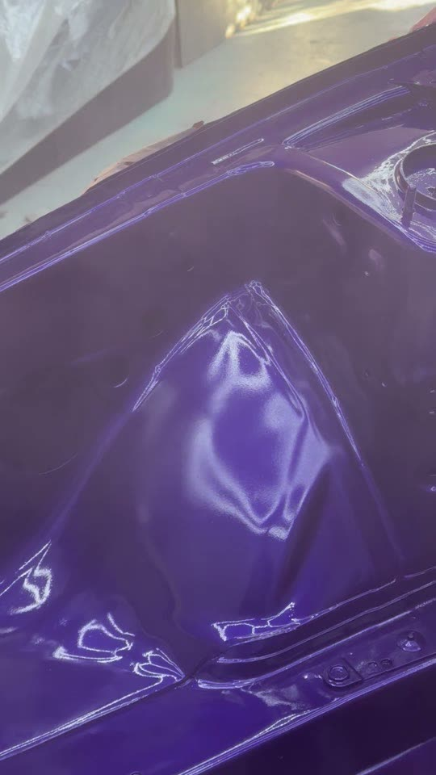
Purple goes down in the booth
The strut towers and chassis rails went purple, with the rails masked off in yellow tape while the colour went down. The gloss on the inner wing is why you take your time on the bits most people never see.
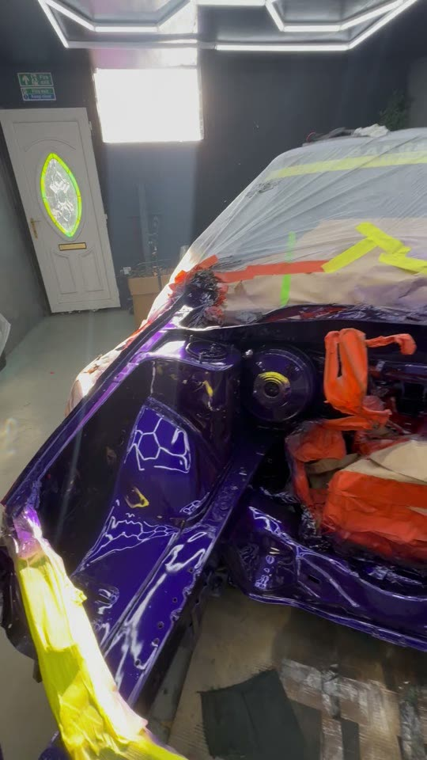
Glitter under the lacquer
Glitter was mixed straight into the purple and lacquered over the top, so every flake sits under the gloss. Up close it's pure sparkle; step back and it's a proper deep purple.
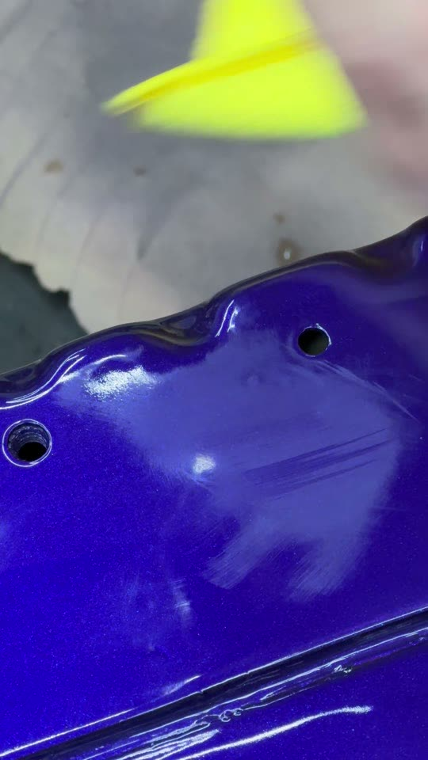
De-nibbing the fresh paint
The first thing that happens to fresh paint is a block. A small nib block knocks the head off any dust nibs that landed in the clear, so the finish ends up dead flat. Focus on the top of the nib, keep it even, and stay well away from the edges.
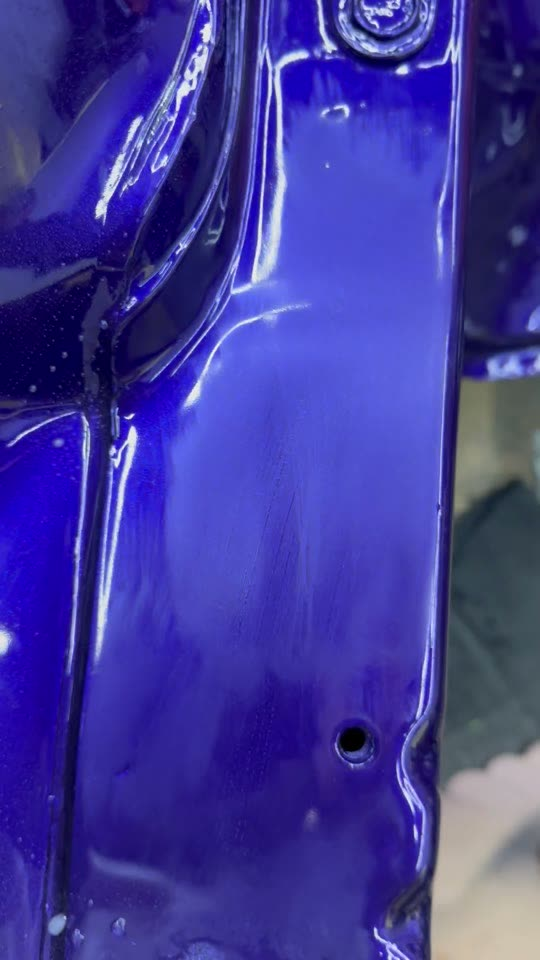
Wet flatting with 2000 grit
Every panel gets checked by feel. Sanding water is misted on so it gets into every imperfection, then the spot is flatted back slowly with 2000 grit on a block. Slow, gentle passes, wipe with a clean rag, check, repeat.
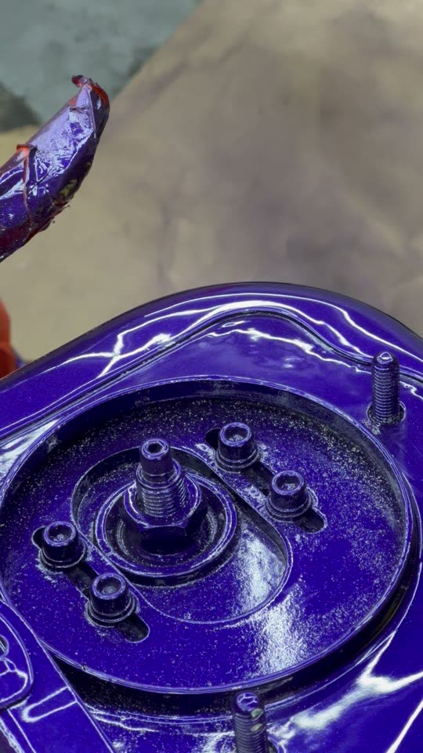
The tape-cone touch-up trick
Sanded through somewhere small? Roll masking tape into a cone like a marker, dip the tip in the leftover paint (always keep the extra from a fresh paint job) and dab over the spot. Then lacquer and hardener on top, flat it with 2000 grit and cut it back.
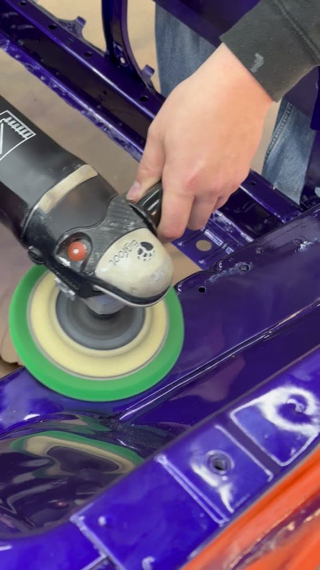
Compound without burning through
Only a tiny bit of compound on the pad, and the Rupes speed comes right down in tight areas like the chassis rails. If the pad edge catches anything you'll burn straight through fresh paint.
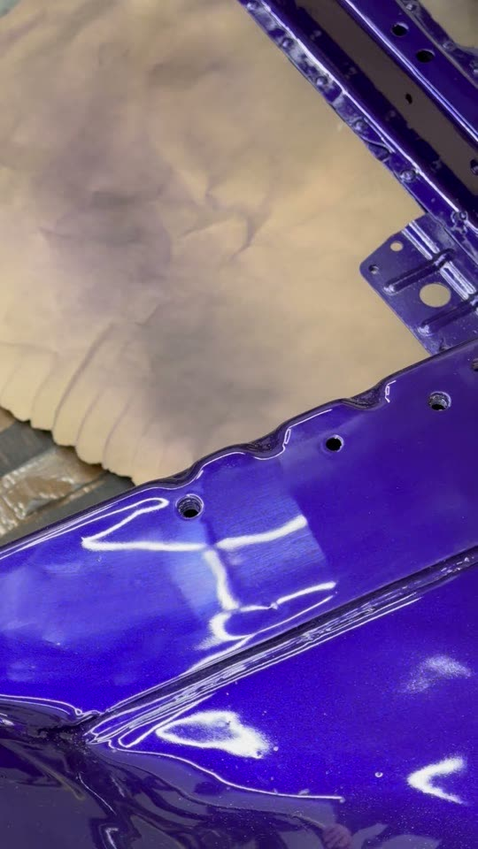
Polished to a mirror
Machine polish, then a wipe down to reveal the depth in the purple. The bay now throws back every light in the booth.
Watch the build
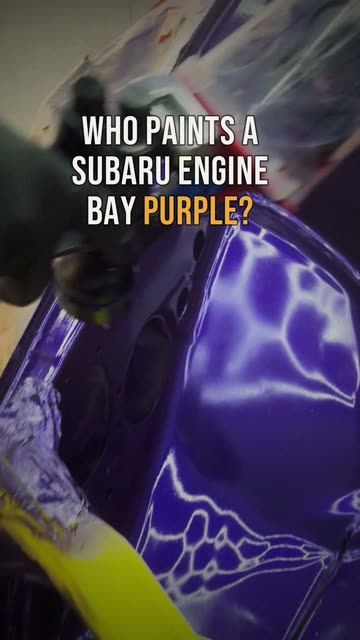
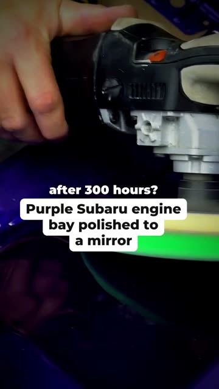
More photos
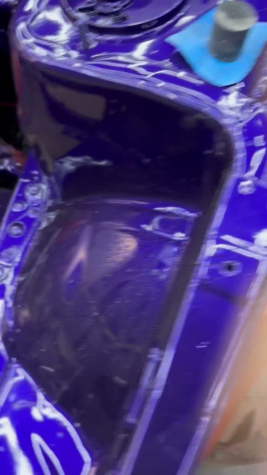
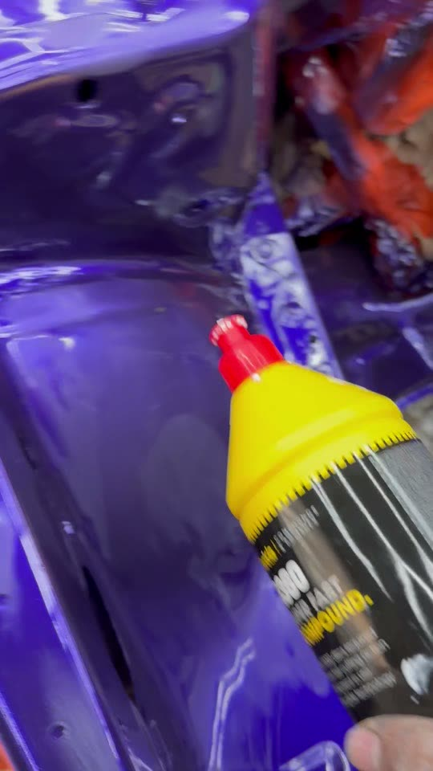
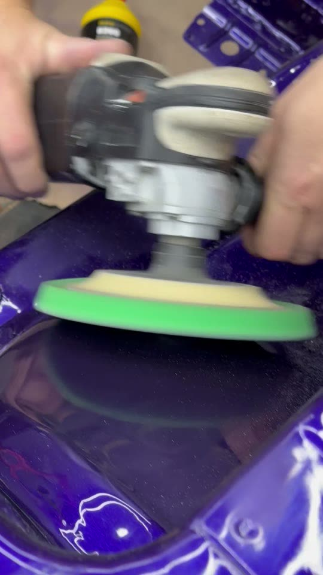
Questions
Can you put glitter in car paint?
Yes. On this Subaru the glitter was mixed straight into a one-stage purple and then lacquered over the top, so the flake sits under the clear and the surface can still be flatted and polished smooth.
What grit do you wet sand fresh paint with?
We flat imperfections back with 2000 grit on a block, using sanding water, then compound and polish to bring the gloss back.
How do you avoid burning through when polishing?
Use very little compound, turn the polisher speed down in tight areas, and keep the pad edge away from edges and body lines, where the paint is thinnest.